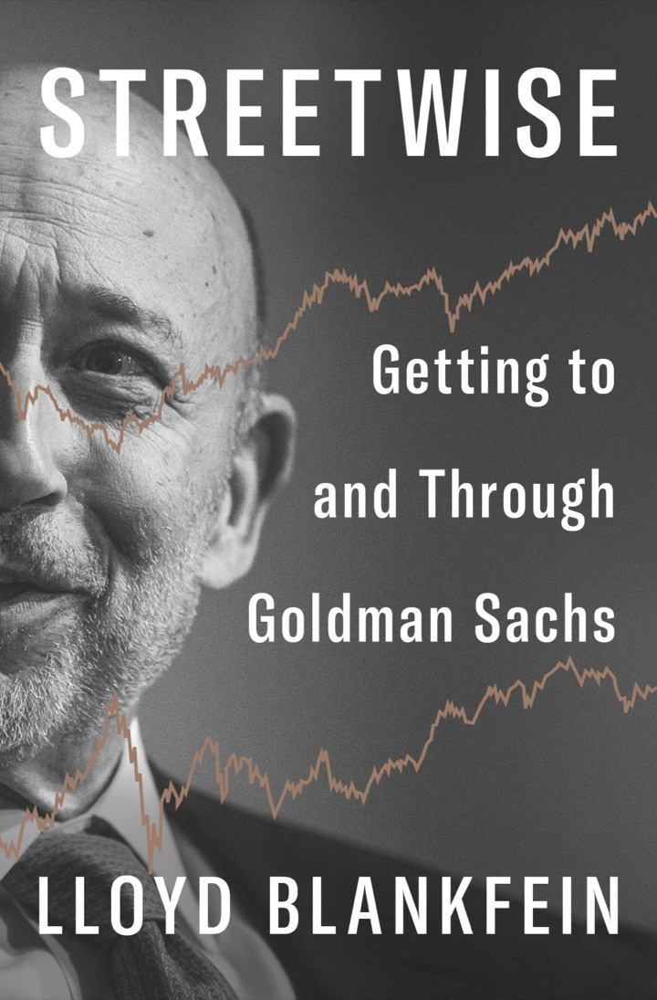

Book notes · Lloyd Blankfein · Penguin Press, 2026
Streetwise
Getting to and through Goldman Sachs
The former Goldman CEO tells how a kid from the Brooklyn projects came in through the firm's least prestigious door, rose to run it, and steered it through 2008.
28 chapters + epilogue36 years at Goldman12 as CEO~130,000 words, condensed

1982 · gold salesman2018 · retires as CEO
Preface & the big idea
Street smarts got him in. Paranoia kept him there.
Blankfein started the memoir after retiring at the end of 2018, put it in a drawer, and came back to it four years later. His reason: plenty of policymakers and economists have written about the 2008 crisis, but almost no one has described what it felt like from inside a bank.
The book has two halves. The first is an outsider's climb: public housing in East New York, Harvard on financial aid, an unhappy stretch as a tax lawyer, and a job selling gold at J. Aron, a commodities trader Goldman had just bought and soon regretted. The second is the view from the top: the partnership's fight over going public, the succession dramas, the crisis, and the years when Goldman became a public villain.
What ties it together is what he calls street smarts: seeing yourself objectively and reading other people with the same cold eye. In his telling, that habit made him a good salesman, a wary risk manager and a leader who expected the worst. He also brings a dry, self-mocking humour that he admits has sometimes cost him.
This is his account. On the contested episodes, the 2008 trades, the SEC's ABACUS case and 1MDB, the notes below report what he says and don't adjudicate it.
The arc in numbers
$130M
What Goldman paid for J. Aron in 1981. Its biggest purchase until 2000, and for a while one of its few black marks.
40%
J. Aron's share of Goldman's profits by 1990, with only around 3% of the staff a year earlier.
$168M
The value of his IPO shares at the close of trading on the first day, 4 May 1999.
<$50
Goldman's share price in November 2008, below the $53 IPO price. A year earlier it had traded in the mid-$200s.
Lloydisms
When he left, colleagues compiled a list of his sayings. The book is full of them, mostly at his own expense: he hears faster than you talk; he finally got good at losing weight just as he got lymphoma; he doesn't promote friends, he befriends people who deserve promotion.
The route: from the projects to the corner office
1957Linden Houses, East New YorkMoves in aged three. Dad sorts mail on the night shift.
1971–78Harvard, then Harvard LawArrives at 16 on full aid, washing dishes 15 hours a week.
1978–82Tax lawyer, Donovan, LeisureTwo years in LA on record-company tax refunds. Wins, and is bored.
1982J. Aron gold deskJoins as a salesman, taking a pay cut, with no idea Goldman owns the firm.
1988–97Partner, then FICCPartner in 1988, co-head of J. Aron after 1994, co-head of FICC in 1997.
2004–18President, then CEOPresident and COO in 2004, chairman and CEO from June 2006 to 2018.
An outer-borough childhood, two Harvard degrees he says he survived rather than enjoyed, and a legal career that bored him into taking a gamble.
1–2Advantages · Getting Out
The projects as a training ground
He insists his "disadvantaged" childhood gave him advantages: hunger, resilience and a knack for reading people fast.
Five people in a two-bedroom flat at the Linden Houses: parents, his sister Jacky and a grandmother. His father worked nights at the post office for a 10% pay premium; his mother was a receptionist at a burglar-alarm company.
East New York changed fast. He gives the figures as 85% white in 1960 and 80% Black and Hispanic by 1966. His high school, Jefferson, ran on triple sessions and had lost its gym to a police station. He was mugged several times.
First businesses: reselling comics at half price, then baseball cards. At Yankee Stadium he sold hot dogs on a 13% commission, which on one sale came to about a nickel.
Harvard took him at 16 on a full aid package, with loans and dish-washing on top. He felt short, broke and lost; a sophomore slump followed, and he graduated in general studies with honours, along with, he notes, 93% of his class.
He is sharp about class. His Harvard verdict: whether it's right to attend depends on the student, but because of what it unlocks, it always pays to have attended.
3–4Glimpses Beyond · Lawyer, Briefly
The safe path he walked away from
Law trained him in precision and compromise, and showed him a comfortable life he didn't want.
Harvard Law at 20. He took tax courses for the money. Paul, Weiss hired him for tax, then tried to move him to corporate after hiring five people for four openings. He asked if he was fifth on a list of four, and walked.
At Donovan, Leisure he spent two years in Los Angeles reconstructing 1960s recording costs for record companies claiming an investment tax credit. They won large judgments, and the law was soon changed so the case mattered to no one.
He met his wife Laura through a colleague's Rolodex: no one answered until the letter J.
A partners' party in the suburbs settled it. Making partner at a law firm looked deadly to him, and he started taking headhunters' calls for anything but law.
Chapters 5–14
The Aron years
The most interesting stretch of the book. A despised commodities subsidiary, full of streetwise traders, ends up driving Goldman's profits and in the end its culture.
5–6Gold Mettle · From Gold Man to Goldman
In through the back door
Goldman's HR screeners turned him down. J. Aron, which Goldman had just bought, let him in, and it was a business in decline.
Asked by the bullion partner Dennis Suskind whether he could work on the noisy trading floor, he replied: "Where I grew up, I went home to it every day." He started just before Thanksgiving 1982, on $60,000 while his law firm was moving to $65,000.
J. Aron began as a New Orleans coffee trader in 1898. Its profit engine was gold arbitrage: buying physical gold and selling futures against it, using gold borrowed cheaply from small central banks. Its bosses hated holding a position overnight.
It made $60 million on $100 million of capital in 1981, which is why Goldman paid $130 million. Then Volcker tamed inflation, metals went quiet, and profit fell to $30 million in 1982 and zero in 1983. About 100 of the 300 staff were laid off that autumn.
The culture gap was huge. Goldman was "paper" and Ivy League; Aron was "physical," CUNY and shouting. Goldman's business was 85% domestic, Aron's the reverse. On Goldman's prestige ladder he was at the bottom: a salesman, in commodities, in a trading division of a banking firm.
How Aron made money: the cash-and-carry trade
Buy now, sell forward, pocket the gap. When speculators push futures above spot, a firm that buys the physical metal and sells the future is in effect lending money at that rate. Aron did it with gold; Gary Cohn later did it with Soviet aluminium stacked in Rotterdam, piled so high that air traffic control asked for tarps to cut the glare. The same idea made the Goldman Sachs Commodity Index work: rolling futures captures that yield, so commodities could be pitched to long-term investors as an asset that earns something.
Illustrative shape, not prices · drawn for this page
7–9Breaking Through · De-Vals · Innovation
Selling the Goldman name
With no franchise of their own, the Aron outsiders borrowed Goldman's brand and invented products the old guard hadn't thought of.
His breakthrough came from a Saudi client, Al Rajhi, whose customers couldn't earn interest under Islamic law. He proposed they buy a stock basket and sell S&P futures against it, leaving out banks and liquor firms. The first order was $100 million, at about 17% annualised with roughly 5% tracking risk. Bob Rubin put him in touch with the "real" Goldman.
Mark Winkelman, sent in by Rubin to fix Aron, turned it from riskless arbitrage into a principal risk-taker. He hired physicists and engineers as "strats," including Armen Avanessians, whose tools grew into SecDB. Blankfein credits SecDB as one reason Goldman got through 2008 without major losses.
Blankfein built a foreign-exchange sales force from nothing, poaching from the banks it would compete with. Forex profit was $10 million in 1984 and $20 million in 1985, and in 1986 a Euromoney poll ranked the team in the top twenty.
Products followed: "quanto" options that adjust to a foreign asset's value, hedges that vanish if a takeover fails, foreign-currency commercial paper (over $1 billion sold in the first weeks), and the GSCI. Old Goldman called the newcomers thuggish, and Rubin had to broker a signed truce.
From write-off to engine
Goldman bought at the top of the metals boom. By 1983, its first full year inside Goldman, Aron earned nothing.
…then the cowboys drove the herd
In 1989 Goldman's profit was $750 million, 30% of it from Aron. In 1990 it was 40%. Elsewhere on Wall Street, he says, currencies and commodities supplied closer to 20%.
10–11Howdy, Partner! · Paranoia
Partner, and then a lesson in being used
When your title is unclear, act as if you're in charge. When powerful people flatter you, assume they want something.
His promotion to run traders was withdrawn after complaints that a salesman shouldn't manage risk-takers. He didn't argue, just behaved as if he were in charge, and in time it became official without any memo.
In October 1988 John Weinberg phoned to make him partner, one of four from Aron in a class of about three dozen. His pay fell at first: a $200,000 draw against the $550,000 he had earned, plus an 8% return on a capital account that started near zero. Partners had unlimited liability.
Robert Maxwell rang him at home for currency views, and Blankfein was flattered. After Maxwell's death the fraud emerged. Some trades Blankfein had handled moved money from public companies to a private one. Goldman paid $254 million to the looted pension funds, billed to the partners of 1989–91.
His lesson: you only become worth manipulating once you have power, so cultivate a protective cynicism.
12–141994 · Being Difficult · Lloyd of London
The first near-death
He counts 1994 as in some ways worse than 2008, because Goldman was alone and the partnership began to run for the exits.
After the record of 1993 ($2.3 billion pretax), London prop traders had been urged to bet big. When Greenspan raised rates from 3% to 6% they doubled down. Losses ran at $100 million a month and then $200 million; London gave back $800 million. Blankfein lost about a quarter of his capital account.
CEO Steve Friedman quit. Partners rushed to "go limited," since retiring capped their liability, and every departure shrank the capital of those who stayed. Corzine took over with Paulson as number two, ordering partners: "Get into the boat or get out."
Afterwards the pendulum swung to timidity. To shame traders back into taking risk, Blankfein placed his own bet on the dollar rising against the yen, which went from 81 to 146 over the next few years.
In 1997 he named the merged division FICC. His 360-degree reviews kept saying he was cutting and didn't listen; Laura's line about tennis lessons, that you won't get good but you can get better, became his management motto. The London posting taught him how New York-centric the firm was.
The 1994 lifeboats: partners who announced they were leaving
By the partners' dinner in late November 1994, around 50 of 162 partners had announced they were leaving. In a partnership, says Blankfein, a gloomy outlook gives partners a reason to retire and lock in their capital. That reasoning later drove the case for an IPO.
Counts as given in the book · position of dots arbitrary
1997: the old fight ends in a merger
J. AronCurrencies, commodities · principal trading · 6 partners
FICCFixed Income, Currency and Commodities. Blankfein suggested the name and became one of three co-heads.
Some saw it as a hostile takeover by the smaller side. Goldman's swap desks had been converging for years: Aron had moved into client work, while fixed income had started trading as a principal.
Chapters 15–20
The top
A 30-year argument about going public, a palace coup, the bubble and 9/11, and a series of rivals who, as he tells it, took themselves out of the race.
15To IPO or Not to IPO
Capital versus culture
Everyone wanted to look reluctant about a deal that would make them very rich. In a secret survey, three to one were in favour.
The case against: the partnership culture, profits taxed only once, and no quarterly scrutiny. The case for: capital that could walk out of the door (as in 1994), unlimited liability (partners' shorthand: Penn Central, Maxwell), and no stock to pay staff or buy companies.
In January 1996 junior partners, with little built up in their accounts, killed Corzine's plan. Goldman became an LLC instead. What changed minds, he argues, was the end of Glass–Steagall: giant universal banks could lend to the companies Goldman advised, and Goldman's balance sheet was too small to keep up.
In June 1998 the town meeting sounded hostile but the secret survey came out three to one in favour. Then Russia defaulted and LTCM collapsed. Goldman put $300 million into the $3.5 billion rescue and pulled the IPO. Paulson then forced Corzine out.
The IPO was priced at $53 on 4 May 1999 and closed at just over $70. The average partner received $84 million in stock; he held 2,385,170 shares. Envy flared anyway: people who were already very lucky minded that others were luckier.
What going public did, by the book's numbers
3 : 1
Partners in favour in the confidential June 1998 survey, the opposite of how the room sounded.
$53
Offer price on 4 May 1999. Shares closed the day at just over $70.
~15%
The share sold to the public at first; current and former partners kept about 85%.
4×+
Revenue grew from $8.5 billion in 1998 to $37.7 billion in 2006. Scale, he argues, changed the culture more than the listing did.
His verdict: without the IPO, Goldman might have disappeared in 2008 or shrunk to a boutique. The listing changed the firm less than globalization and growth did. Headcount went from 10,000 to 45,000.
16–18Unforeseen · Succession · Housebroken?
The rivals fall away
The two Johns expected the job. In his account, impatience and absence cost them it; he was content as number two.
The bubble years: 32 internet IPOs in 1999, $100 million into Webvan, a $110 million share of the Spitzer settlement over analysts and IPO allocations, and the $6.5 billion purchase of Spear, Leeds & Kellogg, which he opposed. Its remains sold for $30 million in 2014.
On 9/11 he climbed 29 floors back up 85 Broad to clear the building. He suspects the dust he breathed that day may have contributed to his lymphoma fourteen years later.
He says John Thornton was barely seen in the office after 9/11 and John Thain acted as if he was owed the job. Sent to fix the bloated equities division, Blankfein asked the staff what made sense and told them to do it. Thornton left in 2003, Thain soon afterwards for the NYSE, and Blankfein became president and COO in 2004.
When Paulson went to the Treasury in 2006, the board asked, in effect, whether this trader was "housebroken." Paulson insisted he get both the chairman and CEO titles. Steve Friedman had once asked Paulson who he would pick with his own money at stake; Paulson named Blankfein.
19–20A Modern Merchant Bank · Partnership Culture
His plan for the firm
Stop apologising for conflicts. Advise, finance and invest together, the way J. P. Morgan the man once did, and run a public company as if it were still a partnership.
Back then about 70% of revenue came from trading and investing and around 15% each from asset management and banking fees. Even so, he says, they usually chose to be the adviser, because that franchise fed everything else.
Refereeing all this meant training huge egos to step aside for one another now and then. One rule learned the hard way: you can't represent a seller and finance the buyer, because if prices fall the two interests split.
Partnership habits: share information widely, keep consulting, and remember that subordinates talk about you at home. The bottom 5% leave every year. He wants to be appreciated rather than liked.
Philanthropy with a business slant: GS Gives (nearly $3 billion to over 10,000 groups), 10,000 Women and 10,000 Small Businesses. He overruled the commitments committee to lead Tesla's 2010 IPO.
The "triple play": three roles he says reinforce each other
Blankfein's model of a "modern merchant bank," drawn from his Chicago speech in 2006. The overlap creates conflicts, which he acknowledges. His answer is that any adviser paid only when a deal happens is conflicted anyway, and that the fix is to disclose and sometimes walk away.
Concept diagram drawn for this page
Chapters 21–25
Crisis
His account of 2007–10 comes in two acts: an existential crisis Goldman got through better than its rivals, and then a reputational one in which getting through became the charge against it.
21–23Storm · Don't Get Dead · How to Survive
2007–08 from inside
Survival comes before everything else in business. He says Goldman survived because it marked everything to market every day, and so saw the trouble early.
Checking the P&Ls on his BlackBerry during a Die Hard sequel in summer 2007, he saw a Goldman quant fund down 6% in a day. Goldman put in $2 billion and brought in $1 billion from outside investors. The fund lost almost a third that week, then recovered; the new money earned about 20% annualised.
In December 2006 CFO David Viniar told the mortgage traders to get "close to home." By the end of January 2007 the firm was roughly neutral. Some desks were short and some long, and the net stayed within a couple of hundred million dollars of flat.
Goldman demanded collateral from AIG and bought protection against AIG itself for as little as nine basis points.
At the Lehman weekend he told Paulson and Geithner he would join a bad bank funded at $1 billion per bank, but argued against draining healthy banks to save an insolvent one. On 15 September Lehman failed after 158 years. Fuld, in his view, broke the first rule.
He was steadied by mantras like "no choice, no problem." He also leaned on voicemails to all staff and daily 4:15 board calls. Even a 15% chance of catastrophe, he writes, is the odds of Russian roulette.
Five floors and rising water
His image, drawn here: Goldman lived on the top floor, but the water was close enough to hear. Liquidity in its reserve, the "BONY box," fell from $120 billion to half that in a week.
Close to home: why he says Goldman didn't "bet against" clients
Senator Levin's charts showed Goldman's short positions on their own. Blankfein's answer, here and in the 2010 hearing, is that long desks offset them, so the firm as a whole was roughly flat. That is his defence; the subcommittee read the same record as dishonesty.
Illustrative · mechanism as Blankfein describes it
The crisis as he lived it
Dec 2006
"Close to home"Viniar orders mortgage risk cut back towards neutral. Bernanke and Paulson still call subprime contained in 2007.
Aug 2007
Quant fund scare$2 billion of Goldman's money plus $1 billion from outsiders stabilise a falling fund. BNP Paribas freezes funds on 9 August.
Dec 2007
A record year$11.6 billion earned on $46 billion of revenue, while Merrill and Citi had announced write-downs of $7.9 billion and $11 billion.
Mar 2008
Bear StearnsLeveraged 33 to one. A $13 billion Fed loan, then a sale to J.P. Morgan at $2 a share, later raised to $10.
12–15 Sep
The Lehman weekendNo buyer, no government money. Bankruptcy on Monday; a money-market fund "breaks the buck."
16–18 Sep
AIG rescuedAn $85 billion credit line for 79.9% of the insurer. Goldman's BONY box falls from $120 billion to about $60 billion.
20–21 Sep
"Existential weekend"Talks with Citi and Wachovia go nowhere. Goldman becomes a bank holding company, regulated by the Fed.
23 Sep
Buffett, in five hours$5 billion of preferred stock at 10%, plus warrants at $115. Goldman then sells $5.75 billion of common stock at $123.
13 Oct
Held in a room at the TreasuryNine banks must accept $125 billion between them. Goldman's share is $10 billion, which it says it didn't need. Repaid with interest by summer 2009.
Nov 2008
Below the IPO priceStock under $50. Staff cut by 10%. No bonuses for the top executives.
Dates and figures as given in the book
24–25How Did You Do It? · More Calamities
From "How did you do it?" to "How did you do it!"
Within months the praise turned to anger. He thinks much of the anger was unfair, but concedes Goldman had made itself an easy target.
In 2009 he was FT Person of the Year. By July Rolling Stone had called Goldman a "vampire squid." Leaving an interview, he joked that he was "off doing God's work," and the line overshadowed everything else in the article.
ABACUS. He describes Goldman as a market-maker between John Paulson, who wanted to short subprime, and professional buyers who wanted to go long. Goldman itself lost money on the deal. The SEC voted 3–2 to charge the firm. Goldman settled for $550 million without admitting or denying the claims, and acknowledged that its marketing materials had left out Paulson's role. Fabrice Tourre was found liable at trial in 2013.
Senator Levin sent his testimony to the Justice Department. He was questioned under oath several times before the inquiry was dropped in August 2012. A 2016 mortgage-securities settlement cost Goldman over $5 billion.
He sees things he got wrong: a firm with no consumer business had no relationship with the public. A business standards committee made 39 recommendations, summed up as moving from "Can we?" to "Should we?"
1MDB. Goldman underwrote bonds in 2012–13 for a Malaysian fund that US investigators later found Jho Low used to siphon about $4.5 billion. A partner, Tim Leissner, pleaded guilty. Blankfein accepts that the firm was responsible for its corrupt employees, and says he didn't see the red flags investigators later identified.
Chapters 26–28 & Epilogue
After
Cancer, the decision to leave, and a closing set of beliefs about risk, markets and America.
26–27Notes on an Illness · Goodbye to All That
Cancer, then the exit
Illness didn't change him, he says. What changed was the 80/20 split: once he disliked 80% of the job, it was time to go.
A cough he blamed on allergies turned out in 2015 to be an aggressive non-Hodgkin's lymphoma. He gives his odds as about 70% at best and closer to even at worst. Because his health was market-moving information he couldn't tell anyone, so he wrote the press release while the IV was going in. His doctor changed "treatable" to "curable."
Six three-week cycles of chemotherapy, Thanksgiving in a hospital conference room, and a grandson born in another wing of the same hospital. The cancer hasn't returned.
By 2018 he had been CEO for twelve years. He found himself turning the car round on the way to the airport. The board, with his support, picked the banker David Solomon over the trader Harvey Schwartz, partly because it was banking's turn to lead.
At the retired partners' dinner he apologised to everyone promoted two years late, underpaid or forgotten in the lift, then asked whether they were now even.
28+Risk Is Risky · Life After Goldman
What he believes
Risk management is contingency planning, not forecasting. Study history, because the crisis you're in always feels like the worst.
American strength is resilience: forgive people who fail, let the government restore confidence in a crisis, then step back. He thinks post-crisis rules overshot, and that trying to rule out the hundred-year storm costs the ninety-nine years in between.
He admits he got China wrong. Once he expected it to drift towards markets; after 2018 he sees state capitalism, which he expects to be too rigid to correct its mistakes.
He dislikes stakeholder capitalism and ESG mandates, and is wary of industrial policy. He defends tariffs mainly to offset differences in labour costs, and believes CEOs should speak out only on their area of expertise or their employees' welfare, as he did for marriage equality.
What worries him is the fat finger more than the hacker. In 2015 a buggy Goldman program started selling stocks at $1 a share, and in minutes the firm was down hundreds of millions.
In retirement he trades his own account every day, reads history and physics, and tweeted until he decided arguing with people who have subpoena power was stupid.
"It's not that anything can happen; it's that eventually everything will happen."
Blankfein, chapter 28 epigraph
Lessons scattered through the book
The toolkit
Blankfein doesn't write a how-to, but his maxims are practical and often funny. These are the most usable, in my words.
Rising
Act as if you're in chargeWhen your role is unclear, give instructions as advice. If people follow, it becomes real.
Manage down, not upYour reports decide how much you learn. Give them the credit and take the blame.
Be suspicious of flatteryPower makes you worth manipulating. Maxwell taught him that.
Aim to be appreciated, not likedA soldier wants to be well led, not entertained.
Running things
Ask the front line, then say "do it"The people closest to a broken process usually know the fix already.
Read the daily P&L like test wellsCall about any odd number. Merge P&Ls to encourage risk; split them up to expose a weak unit.
Don't confuse wrong with stupidJudge decisions by what was knowable then. Everyone is wrong some of the time.
You can't make people good, only betterLaura's tennis-lesson line, applied to staff and to himself.
In a crisis
Don't get deadRemove the risks that could end you, whatever the cost. Losses can be recovered from.
Mark to market, honestlyA trader who disputes a mark should sell some at that price and prove it.
Plan contingencies, not forecastsIf you've planned for every turn, you react so fast you look prescient.
Over-communicate, and keep 98% workingOnly a small team fights the fire. Everyone else should serve clients as usual.
For the longer story of the bond markets behind FICC and the mortgage securities at the centre of 2008, Robin Wigglesworth's history of debt is a good companion. Notes on A Fabulous Debt are here.